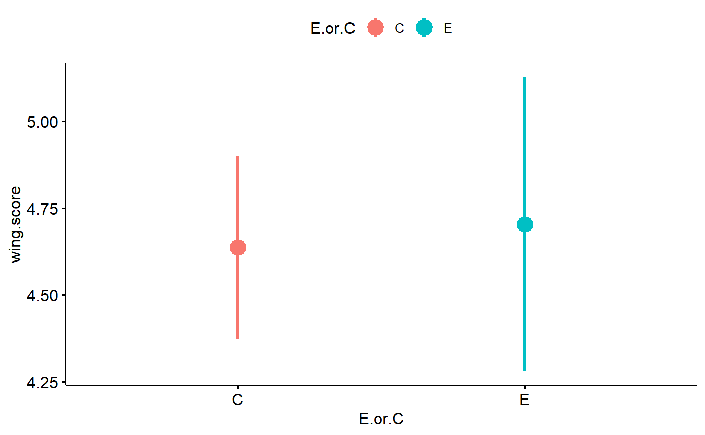

f3) Analysis walthrough: 2-way factorial ANOVA
Nathan Brouwer
2018-12-11
f3-analysis_walkthrough_2-way_ANOVA.RmdIntroduction
This tutorial walks through some types of analysis that can be done using the shroom package. In particular it looks at the situation when you have data that can be group by 2 seperate categorical variables. In our data, we will look at the impacts of both sex (male vs. female) and experimental group (control vs. mutation to candidation gene) on wing scores.
In the previous tutorial we used t-tests and similar analyses to look at the impact of mutation (“experimental” flies) on wing scores of just the female flies collected by 1 student, ignoring the males they collected. In this tutorial we will look at all of the flies collected by the same student. We can therefore investigate the effects of experimentally mutating a candidate gene on shroom expression, fly sex, and any interaction between the experimental treatment and sex.
We have 2 seperate variables, experiemental condition and sex, and each has 2 levels. We therefore have 2 conditions x 2 sexes = 4 possible combinations
To be explicit these 4 groups are
- female control flies
- male control flies
- female experimental flies
- male experimental flies
Let’s call the impact of the experimental mutation “exp” and the impact of sex, “sex”. We can think about several model. The “exp” variable has 2 levels, “C” for the control genotype and “E” for an experimentally mutated candidate allele. The “sex” variable also has 2 levels, “F” for female and “M” for male.
There 5 scenarios that could occur:
-
No effect: All flies have on average the same wing score; that is, there is no difference in wing score between flies with and without the experiemntal mutation (C flies are the same as E flies) and no impact of sex (XX female flies are the same as XY male flies). So, the addition of the experimentally mutated allele to the fly genome as no effect, and the switching of an X for a Y chromosome has no effect.
- Sex effect: Males (M) on average have different wing scores from females (F), but there is no impact of the experimental mutation. That is, there is an impact of trading a X chromosome for a Y chromosome, but no impact of switching a wildtype candidate allele for an experimentally mutated one.
- Experimental effect: Experimental flies (E) are on average different from control (C) flies, but there is no imapct of sex. So, among E flies, males and females are on average the same, and among C flies, males and females are on average the same.
-
Additive effects of sex and experiment: Both sex and the experimental mutation both have effect on wing score, but they are independent. See below for an illustration.
- Interactive effects: Both sex and experimental mutaiton have effects on wing score. Moreover, the effect of on variable depends on the other. See below for an illustration.
In pseudo-R code we can fomulate this as 5 models:
- Null model (no effect): wing.score ~ 1
- Sex model: wing.score ~ 1 + sex
- Experimental model: wing.score ~ 1 + expt
- Additive model: wing.score ~ 1 + sex + expt
- Interaction model: wing.score ~ 1 + sex + expt + sex x expt
The null model (wing.score ~ 1)
In the above models the “1” represents the “intercept” term, which shows up in the summary() output R provides as “(Intercept)”. The meaning of this term depends on the other factors of the model. In the null model we postuate that even though the wing scores of flies might vary, this variation is not drive by either sex or the experimental mutation. In this case the intercept term is the overall or grand mean of all the flies. The null model is often called an intercept only model because it only contains this intercept term. (The term “intercept” makes the most sense when dealing with typical regression data, but the term is use for all linear model. If you dig into the underlying math, it makes sense as to why). The null model can be though of as saying “if someone asked you to guess what the wing score of a fly from your experiment was, your best guess would be the grand mean because most flies would be fairly close to that value.”
If the grand mean wing score was 4.4, then final fitted model would simply be
- y ~ 4.4
In the above formulation of have included the intercept in every model. This is the default way R calcualtes things. The intercepts is always implied unless explicly coded otherwise, so you’ll typically see the models coded like this
- Null model (no effect): wing.score ~ 1
- Sex model: wing.score ~ sex
- Experimental model: wing.score ~ expt
- Additive model: wing.score ~ sex + expt
- Interaction model: wing.score ~ sex + expt + sex x expt
However, the intercept term is always there so its good practice to write it out. The intercept term is denoted with a “1” in R; when writing generic model notation its usually called “B0” for “beta 0”.
Single-variable models
We have 2 models, the sex model and experimental model, each with a single variable. As I just noted, these models also contain an intercept, hence I write the sex model as
- wing.score ~ 1 + sex
This represents an R-like statement of the model. A key aspect of this formulation of the model is that the intercept term is no longer the grand mean, but instead represents the baseline level of the sex factor. In this case, it represents the mean of the females (XX). The variable “sex” does not represent the mean of the males (XY), but rather the differences between the F group and the M group. That is, the sex variable is an effect size.
Mathematically, what we are invoking is an equation like this
- wing.score ~ B0 + B1 x sex?
Where B0 is our intercept term, which in this case is the mean of the females; B1 is the difference between males and females, and “sex?” takes on a value of 0 for females and 1 for males.
The variable “sex?” is often called an indicator variable, where “0” indicates females, the baseline, and “1” indicates males. (This is also called a dummary variable or dummy coding).
We can break this down into 2 equations
- For females: wing.score ~ B0 + B1 x 0
- For males: wing.score ~ B0 + B1 x 1
So, this reduces to
- For females: wing.score ~ B0 + 0
- For males: wing.score ~ B0 + B1
and further to
- For females: wing.score ~ B0
- For males: wing.score ~ B0 + B1
If the mean of females was 4.4 and the mean sof males 5.4, then it would work out to be
- B0 = 4.4
- B1 = 5.4 - 4.4 = 1.0
The equations would be
- Females: wing.score ~ 4.4 + 1 x 0
- Males: wing.score ~ 4.4 + 1 x 1
Which simplifies to
- Females: wing.score ~ 4.4 + 0
- Males: wing.score ~ 4.4 + 1
and further to
- Females: wing.score ~ 4.4
- Males: wing.score ~ 5.4
The same logic would apply to a model of the experimental factor “expt”.
Additive models
The additive model postulates that there are seperate and independent effects of sex and experimental mutation So, sex changes wing score on average by a certain increment, and the experimental mutation changes the score by a certain increment, and these effects get mixed and matches for the four categories of flies.
Our basic R-style equation is
- wing.score ~ 1 + sex + exp
A more mathy equation would be
- wing.score ~ B0 + B1 x sex? + B2 x expt?
B1 is the “impact” (effect size) of sex, and B2 is the impact of the experimental mutation. “sex?” takes on 0 for females and 1 for males, as before, and “expt?” takes on 0 for females and 1 for males.
This implies 4 equations
- Females controls: wing.score ~ B0 + B1 x 0 + B2 x 0
- Females experiemntal: wing.score ~ B0 + B1 x 1 + B2 x 0
- Male controls: wing.score ~ B0 + B1 x 0 + B2 x 1
- Male experiemntal: wing.score ~ B0 + B1 x 1 + B2 x 1
This simplifies to
- Females controls: wing.score ~ B0
- Females experiemntal: wing.score ~ B0 + B1 x 1
- Male controls: wing.score ~ B0 + B2 x 1
- Male experiemntal: wing.score ~ B0 + B1 x 1 + B2 x 1
Suppose that females have a mean of 4.4, and the impact of swapping an X chromosome for a Y chromosome to make a male flie increases the wing score by 1.0. Additionally, the experimental mutation increases the wing score by 0.5
The 4 equations would therefore be
- Females controls: wing.score ~ 4.4 + 1 x 0 + 0.5 x 0
- Females experiemntal: wing.score ~ 4.4 + 1 x 1 + 0.5 x 0
- Male controls: wing.score ~ 4.4 + 1 x 0 + 0.5 x 1
- Male experiemntal: wing.score ~ 4.4 + 1 x 1 + 0.5 x 1
This simplifies to
- Females controls: wing.score ~ 4.4 + 0 + 0
- Females experiemntal: wing.score ~ 4.4 + 1 + 0
- Male controls: wing.score ~ 4.4 + 0.5
- Male experiemntal: wing.score ~ 4.4 + 1 + 0.5
and further to
- Females controls: wing.score ~ 4.4
- Females experiemntal: wing.score ~ 4.4 + 1
- Male controls: wing.score ~ 4.4 + 0.5
- Male experiemntal: wing.score ~ 4.4 + 1 + 0.5
and even further to
- Females controls: wing.score ~ 4.4
- Females experiemntal: wing.score ~ 5.4
- Male controls: wing.score ~ 4.9
- Male experiemntal: wing.score ~ 6.9
While we might want to write out all 4 equations, a more compact notation would just be
wing.score ~ 4.4 + 1 x sex? + 0.4 x expt?.
In a results section we migth say something like “our fitted model had the form wing.score ~ 4.4 + 1 x sex? + 0.4 x expt?
where ‘sex?’ and ‘expt’ are indicator variables that can take on the values of 0 or 1."
Interaction models (multiplicative)
A model which has seperate effects for the two variables is called and aditive model because the effects are simply summed up. What if the effect of the experimental mutation depends on the sex of the fly? This can be described with a multiplicative model that contains and interaction term.
The simples R notation would be
- wing.score ~ sex x exp
This implies the full equation of
- wing.score ~ 1 + sex + exp + exp x sex
R isn’t very picky, so all of the following will actually work the exact same way
- wing.score ~ sex x exp
- wing.score ~ 1 + sex x exp
- wing.score ~ sex + sex x exp
- wing.score ~ 1 + sex + sex x exp
- wing.score ~ exp + sex x exp
- wing.score ~ 1 + exp + sex x exp
- wing.score ~ sex + exp + sex x exp
- wing.score ~ 1 + sex + exp + sex x exp
The key part is just “sex x exp.” All the other terms in the model are implied because in order to have model with a multiplicative term of “sex x exp” you also need a sex term, and exp term, and an intercept.
The mathy equation would be
- wing.score ~ B0 + B1 x sex? + B2 x expt? + B3 x sex? x expt?
We now have 3 terms
- B0: the intercept, which here is the baseline level. This would be females in the control group
- B1: the effect of sex.
- B2: the effect of the experiment
- B3: the effect of sex within the experimental group.
This is somewhat simplified; if you have a model with an interaction term you have to be careful how to interpret the subsidary terms. For now we’ll set these issues aside.
This implies four equations
- Females controls: wing.score ~ B0 + B1 x 0 + B2 x 0 + B3 x 0 x 0
- Females experiemntal: wing.score ~ B0 + B1 x 1 + B2 x 0 + B3 x 0 x 1
- Male controls: wing.score ~ B0 + B1 x 0 + B2 x 1 + B3 x 1 x 0
- Male experiemntal: wing.score ~ B0 + B1 x 1 + B2 x 1 + B3 x 1 x 1
We multiple the zeros and get
- Females controls: wing.score ~ B0
- Females experiemntal: wing.score ~ B0 + B1 x 1
- Male controls: wing.score ~ B0 + B2 x 1
- Male experiemntal: wing.score ~ B0 + B1 x 1 + B2 x 1 + B3 x 1 x 1
And then the 1s
- Females controls: wing.score ~ B0
- Females experiemntal: wing.score ~ B0 + B1
- Male controls: wing.score ~ B0 + B2
- Male experiemntal: wing.score ~ B0 + B1 + B2 + B3
Suppose that females have a mean of 4.4 as before, and the impact of swapping an X chromosome for a Y chromosome to make a male flie increases the wing score by 1.0. Additionally, the experimental mutation increases the wing score by 0.5; additinally in male experimental flies, the wing score increase by and additinal 1.5.
So, our parameters are
- B0 = 4.4
- B1 = 1
- B2 = 0.5
- B3 = 1.5
So we get
- Females controls: wing.score ~ 4.4 + 1 x 0 + 0.5 x 0 + 1.5 x 0 x 0
- Females experiemntal: wing.score ~ 4.4 + 1 x 1 + 0.5 x 0 + 1.5 x 0 x 1
- Male controls: wing.score ~ 4.4 + 1 x 0 + 0.5 x 1 + 1.5 x 1 x 0
- Male experiemntal: wing.score ~ 4.4 + 1 x 1 + 0.5 x 1 + 1.5 x 1 x 1
After the mulplication goes through we get
- Females controls: wing.score ~ 4.4
- Females experiemntal: wing.score ~ 4.4 + 1
- Male controls: wing.score ~ 4.4 + 0.5
- Male experiemntal: wing.score ~ 4.4 + 1 + 0.5 + 1.5
And finally
- Females controls: wing.score ~ 4.4
- Females experiemntal: wing.score ~ 5.4
- Male controls: wing.score ~ 4.9
- Male experiemntal: wing.score ~ 7.4
While we might want to write out all 4 equations, a more compact notation would just be
wing.score ~ 4.4 + 1 x sex? + 0.4 x expt? + 1.5 x sex? x expt?
In a results section we migth say something like “our fitted model had the form wing.score ~ 4.4 + 1 x sex? + 0.4 x expt? + 1.5 x sex? x expt?
where ‘sex?’ and ‘expt’ are indicator variables that can take on the values of 0 or 1."
Preliminaries
Load packages
Load the shroom package. You can download it with instal.packages(“shroom”) if you haven’t used it ever before. See “Loading the shroom package” for more information.
library(shroom)Load other essential packages
library(ggpubr) #plotting
#> Loading required package: ggplot2
#> Loading required package: magrittr
library(cowplot)
#>
#> Attaching package: 'cowplot'
#> The following object is masked from 'package:ggpubr':
#>
#> get_legend
#> The following object is masked from 'package:ggplot2':
#>
#> ggsave
library(dplyr) #preliminary data cleaning
#>
#> Attaching package: 'dplyr'
#> The following objects are masked from 'package:stats':
#>
#> filter, lag
#> The following objects are masked from 'package:base':
#>
#> intersect, setdiff, setequal, union
library(car)
#> Loading required package: carData
#>
#> Attaching package: 'car'
#> The following object is masked from 'package:dplyr':
#>
#> recode
library(broom)
library(bbmle) #AIC taBLE
#> Loading required package: stats4
#>
#> Attaching package: 'bbmle'
#> The following object is masked from 'package:dplyr':
#>
#> slice
library(lme4)
#> Loading required package: Matrix
library(data.tree)
# library(lawstat) #?
# library(effsize) #Cohen's dwCleaning and subsetting the wing data
This information is covered in more detail in “Subsetting a dataframe with dplyr.”
Examine raw data
dim(wingscores)
#> [1] 7754 16
names(wingscores)
#> [1] "student.ID" "seat" "gene" "allele" "section"
#> [6] "file" "loaded" "E.or.C" "sex" "group"
#> [11] "wing.score" "stock.num" "temp.C" "allele.num" "gene.shrt"
#> [16] "gene.allele"
head(wingscores)
#> student.ID seat gene allele section file loaded E.or.C sex group
#> 1 1 1 abl abl[2] AM.M wing_01.xlsm loaded E M E.M
#> 2 1 1 abl abl[2] AM.M wing_01.xlsm loaded E M E.M
#> 3 1 1 abl abl[2] AM.M wing_01.xlsm loaded E M E.M
#> 4 1 1 abl abl[2] AM.M wing_01.xlsm loaded E M E.M
#> 5 1 1 abl abl[2] AM.M wing_01.xlsm loaded E M E.M
#> 6 1 1 abl abl[2] AM.M wing_01.xlsm loaded E M E.M
#> wing.score stock.num temp.C allele.num gene.shrt gene.allele
#> 1 5 8565 25 1 abl abl.1
#> 2 5 8565 25 1 abl abl.1
#> 3 5 8565 25 1 abl abl.1
#> 4 5 8565 25 1 abl abl.1
#> 5 5 8565 25 1 abl abl.1
#> 6 5 8565 25 1 abl abl.1Data analysis: Factorial ANOVA
We will walk through analyses comparing just two groups: female control flies versus female experimental flies. In subsequent tutorials we’ll look at more complex data.
Nomeclature note: “Student”" vs. “fly-level”" data
Because these data result from summarizing the work done by each student, I will refer to it as student-level data. In contrast, the raw data generated by the student is fly-level data because each data point represents a single fly.
Data from 1 student, including fly sex
We will work with data with 4 groups:
- male experimental
- male control
- female experimental
- female control
Select all data
student1.all <- wingscores %>% filter(student.ID == 1 )Exploratory plot
Plot boxplots. Sex is set as the x axis, and then the 2 treatments are colored coded using fill =
ggboxplot(data = student1.all,
y = "wing.score",
x = "sex",
fill = "E.or.C")It look like we have an interaction effect. In female flies the experimental (E) scores are lower than controls, but in males the E’s are higher.
For plotting it can be very helpful to make a new variable that combines two seperate colums.
First I’ll make the new varible using paste()
student1.all$group <- paste(student1.all$sex,
student1.all$E.or.C,
sep = ".")Now I’ll recode them using factor() to put things in the order I want. (Not actually necessary here actually)
student1.all$group <- factor(student1.all$group,
levels = c("F.C","F.E",
"M.C","M.E"))Plot with error bars
ggerrorplot(data = student1.all,
y = "wing.score",
x = "group",
color = "sex",
desc_stat = "mean_ci",
size = 1.2)Factorial ANOVA
When we have multiple groups that can occcur in combination we can use factorial ANOVA. In this case we have a 2 x 2 ANOVA because we have two variables, sex and experimental group, with 2 levels. THat is, each can take on two values: sex = male or female; experimental group (E.or.C) = “E” or “C”.
We start with a null model of just the grand mean. This can also be called and intercept-only model because the technical name for this grand mean term in this context is the intercept, and its the only term in teh model, hence intercept-only model.
lm.null <- lm(wing.score ~ 1, data = student1.all)This matches a model set up like this with no x-variable
ggerrorplot(data = student1.all,
y = "wing.score",
x = NULL,
desc_stat = "mean_ci",
size = 1.2)THe mean is about 4.7, which we can check with the summary command
summary(student1.all$wing.score)
#> Min. 1st Qu. Median Mean 3rd Qu. Max.
#> 3.000 4.000 5.000 4.667 5.000 7.000Now a model of just sex, ignorning the experimental group. This model can be written like this.
lm.sex <- lm(wing.score ~ sex, data = student1.all)Technically it has an intercept term plus a term for sex, so the full model is actually this:
lm.sex <- lm(wing.score ~ 1+ sex, data = student1.all)R puts in the 1 for the intercept automatically for us.
This model matches the data set up like this:
ggerrorplot(data = student1.all,
y = "wing.score",
x = "sex",
color = "sex",
desc_stat = "mean_ci",
size = 1.2)We can get the means by hand using dplyr
student1.all %>%
group_by(sex) %>%
summarize(mean = mean(wing.score))
#> # A tibble: 2 x 2
#> sex mean
#> <fct> <dbl>
#> 1 F 4
#> 2 M 5.11The next models is for the experimental group, ignoring sex. Again, R puts the 1 for the intercept in for us automatically.
lm.E.or.C <- lm(wing.score ~ E.or.C,
data = student1.all)This model matches the data set up like this:
ggerrorplot(data = student1.all,
y = "wing.score",
x = "E.or.C",
color = "E.or.C",
desc_stat = "mean_ci",
size = 1.2)
Now we can include both at the same time. I call this an additive model because it assumes the effect of one variable is independent of what is going on with the other, so the effects of the experimenta are just added to the effect of being male or feamle.
lm.add <- lm(wing.score ~ 1+ sex + E.or.C, data = student1.all)This is actually a bit tricky to graph so we’ll leave it alone.
Finally we build a model that includes and interaction. This allows the impact of the experimental treatment to depend on the sex. We can see this in the graph above: Both male and female control flies (F.C and M.C) are similar. Female experimental flies are much lower than both F.C and M.C. In contrast, male experimental flies (M.E) are the highst group. So, the impact of the experimental treatment causes female flies to get a lower wing score, but male flies to get a higher wing score, relative to controls.
The interaction model can be coded like this.
lm.intxn <- lm(wing.score ~ sex*E.or.C,
data = student1.all)To write it out fully, though, we would have to add the additive model used above
lm.intxn<- lm(wing.score ~ sex + E.or.C + sex*E.or.C,
data = student1.all)Actually, if we want to totally write it out we need to include the intercept term of “1”
lm.intxn<- lm(wing.score ~ 1 + sex + E.or.C + sex*E.or.C,
data = student1.all)This corresponds to the first graph we made using our new “group” variable.
ggerrorplot(data = student1.all,
y = "wing.score",
x = "group",
color = "sex",
desc_stat = "mean_ci",
size = 1.2)
We can get the means by hand using dplyr if we pass both sex and E.or.C to group_by()
student1.all %>%
group_by(sex, E.or.C) %>%
summarize(mean = mean(wing.score))
#> # A tibble: 4 x 3
#> # Groups: sex [?]
#> sex E.or.C mean
#> <fct> <fct> <dbl>
#> 1 F C 4.38
#> 2 F E 3.25
#> 3 M C 4.88
#> 4 M E 5.32We get the same results if we use the “group” variable we made
student1.all %>%
group_by(group) %>%
summarize(mean = mean(wing.score))Compare the values of the summary stats to the output of the summary() command.
coef(summary(lm.intxn))
#> Estimate Std. Error t value Pr(>|t|)
#> (Intercept) 4.3750000 0.1535298 28.496100 5.130954e-35
#> sexM 0.5073529 0.2139071 2.371838 2.116218e-02
#> E.or.CE -1.1250000 0.2659214 -4.230574 8.718731e-05
#> sexM:E.or.CE 1.5584365 0.3357806 4.641234 2.131605e-05NOte that
- “sexM” can be interpreted as “sex? = M”
- “E.or.CE” as “E.or.C? = E”
- “sexM:E.or.CE” as “sex? = M x”
How do we get from summary output of the model to the group means? The grou means are
- F.C (female control) = 4.38
- F.E (female experimental) = 3.25
- M.C (male contorl) = 4.88
- M.E (male experimental) = 5.32
We can substitute the appropriate numbers
- F.C = “(Int)” = 4.38
- F.E = “(Int)” + “E.or.CE” = 4.38 + -1.14 = 3.25
- M.C = “(Int)” + “sexM” = 4.38 + 0.507 = 4.88
- M.E = “(Int)” + “E.or.CE” + “sexM” + sexM:E.or.CE = 4.38 + -1.14 + 0.507 + 1.6 = 5.32
Model formulas
Its useful to look at all the model formulas at the same time. I’ll use “ws” as a stand-in for wing.scores
Intercept only: ws ~ 1 sex: ws ~ 1 + sex experiment: ws ~ 1 + E.or.C additive model: ws ~ 1 + sex + E.or.C interaction model: ws ~ 1 + sex + E.or.C + sex*E.or.C
Top to bottom, the models are organized from simplest to most complex in terms of the number of parameters. We say these models are “nested” because each model on the list occurs within the model below it. We would say the Intercept only model is nested within the sex model as well as the experiment model; the sex model and experiment model are both nested within the additive model; and the additive model is nested within the interaction model.
While the intercept model is also nested within the additive model and interaction model. Usually, however, we just compare models that differ by a single term. So we focs on the fact that the intercept and sex models differ by one term (sex) and that the intercept model is the smaller model (1 term, the intercept) nested in teh more complex sex model (2 terms, the intercept and the sex effect).
Testing nested models
We can text nested models using the anova() command. What this does is tests the significance of the term that differs between the 2 models.
We can compare the sex and the nested null model like this
anova(lm.null,
lm.sex)
#> Analysis of Variance Table
#>
#> Model 1: wing.score ~ 1
#> Model 2: wing.score ~ 1 + sex
#> Res.Df RSS Df Sum of Sq F Pr(>F)
#> 1 59 47.333
#> 2 58 29.556 1 17.778 34.887 1.943e-07 ***
#> ---
#> Signif. codes: 0 '***' 0.001 '**' 0.01 '*' 0.05 '.' 0.1 ' ' 1This tells us that if we are just looking at the sex parameter and ignoring the experimental groups, sex is significanlty different. DOes this match the graph you made? Re-run the code to check.
We can do the same for the impact of E.or.C. Again, this is ignoring sex
anova(lm.null,
lm.E.or.C)
#> Analysis of Variance Table
#>
#> Model 1: wing.score ~ 1
#> Model 2: wing.score ~ E.or.C
#> Res.Df RSS Df Sum of Sq F Pr(>F)
#> 1 59 47.333
#> 2 58 47.266 1 0.06734 0.0826 0.7748This is non-significant. Does this match the graph you made? Re-run the graph code if necessary to check.
We can compare the additive model to what’s nested in it, which is both the sex and the E.or.C model. This is a bit tricky to think about what’s going on. We saw above that sex is significant and E.or.C is not. So if start with a model with “sex” as a predictor and add “E.or.C” to it, and “E.or.C” on its own isn’t significant, then we expect the p-value from this comparisons to be non-significant.
anova(lm.sex, # just sex
lm.add) # sex + E.or.C
#> Analysis of Variance Table
#>
#> Model 1: wing.score ~ 1 + sex
#> Model 2: wing.score ~ 1 + sex + E.or.C
#> Res.Df RSS Df Sum of Sq F Pr(>F)
#> 1 58 29.556
#> 2 57 29.244 1 0.31154 0.6072 0.4391In contrast, if we start with the lm.E.or.C model and compar it to lm.add, we are adding “sex” to the model and sex is significant. So this comparison should be signifcant.
anova(lm.E.or.C,
lm.add)
#> Analysis of Variance Table
#>
#> Model 1: wing.score ~ E.or.C
#> Model 2: wing.score ~ 1 + sex + E.or.C
#> Res.Df RSS Df Sum of Sq F Pr(>F)
#> 1 58 47.266
#> 2 57 29.244 1 18.022 35.127 1.895e-07 ***
#> ---
#> Signif. codes: 0 '***' 0.001 '**' 0.01 '*' 0.05 '.' 0.1 ' ' 1The upshot of comparing these 3 models is that sex is an important predictor of wing score, but E.or.C is not. This is tricky on the first pass (and probably the 2nd, 3rd and 4th…) but just roll with it for now.
Interaction model
If we compare the interaction model and the additive model, we are testing the significance of the sex*E.or.C term that is different between them. Again, the additive model is “sex + E.or.C” while the interaction model is “sex + E.or.C + sex X E.or.C.”
anova(lm.intxn,
lm.add)
#> Analysis of Variance Table
#>
#> Model 1: wing.score ~ sex * E.or.C
#> Model 2: wing.score ~ 1 + sex + E.or.C
#> Res.Df RSS Df Sum of Sq F Pr(>F)
#> 1 56 21.120
#> 2 57 29.244 -1 -8.124 21.541 2.132e-05 ***
#> ---
#> Signif. codes: 0 '***' 0.001 '**' 0.01 '*' 0.05 '.' 0.1 ' ' 1The p-value is small, indicating that there is a significant interaction. So, while when isolated on its own experimental treatment isn’t significant, but when you take into account sex it is. What this means is the the effect of the “experimental treatment” (mutation of the candidate gene) is different for the two sexes. For females, E.or.C wing scores are very low, while for males the control and E.or.C means are very similar; if anything, the experimental males are higher than controls.
We can quickly see the means of the 4 groups by building a means model using -1 notation to “drop the intercept” and using a colon insteads of asterisk between sex and E.or.C (this is just an R thing for coding this type of model).
Build the model
lm.means <- lm(wing.score ~ -1 + E.or.C:sex,
data = student1.all)Look at the output (I use the tidy() funciton from the broom package to give concise output insteady of the verbosity of summary())
tidy(lm.means)
#> # A tibble: 4 x 5
#> term estimate std.error statistic p.value
#> <chr> <dbl> <dbl> <dbl> <dbl>
#> 1 E.or.CC:sexF 4.38 0.154 28.5 5.13e-35
#> 2 E.or.CE:sexF 3.25 0.217 15.0 3.16e-21
#> 3 E.or.CC:sexM 4.88 0.149 32.8 3.12e-38
#> 4 E.or.CE:sexM 5.32 0.141 37.7 1.66e-41Model comparison using AIC
Another way to look a bunch of models is AIC. Lower is better. THe best fitting model had a “dAIC” of zero (“d” = “delta” for change.)
AICtab(lm.null,
lm.sex,
lm.E.or.C,
lm.add,
lm.intxn,
base = TRUE)
#> AIC dAIC df
#> lm.intxn 117.6 0.0 5
#> lm.sex 133.8 16.2 3
#> lm.add 135.2 17.5 4
#> lm.null 160.0 42.4 2
#> lm.E.or.C 162.0 44.3 3